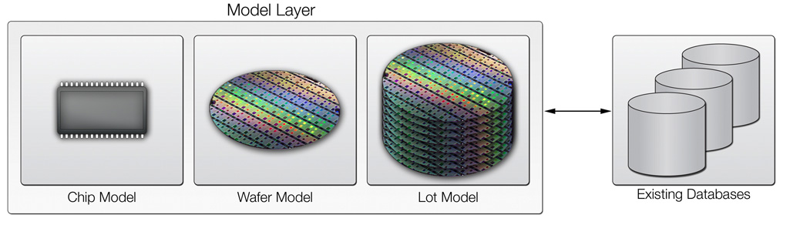

ModelThe atomic model used in our framework is the Chip model, encapsulating chip-level data. Higher level (wafer or lot) abstractions are clearly possibly, but we have found abstracting data at the chip-level to be the best for maintaining clean interfaces between blocks. To generate Chip objects, an ATESimulator recipe is provided to simulate automated test equipment. This ATE simulator takes raw CSV data and periodically emits chip objects. The model component of the MVC architecture describes a means of abstracting data into standardized structures, typically implemented as a layer positioned directly above low level relational databases, as shown in Figure 1. These can effectively be treated as high level structures that bring along associated properties through the system. For example, a chip model may have {x,y} coordinates, measurement data, and a wafer ID. A wafer model then would be treated as a collection of chip models, perhaps with a product ID linking it further up the hierarchy. Depending on the specific implementation, the test engineer may also desire to encapsulate data from different stages of fabrication and associate such data with each chip. A chip model would then be defined as containing collections of these models from throughout the fabrication process. Thus, once defined, such abstract model objects encapsulate key data segments from throughout the entire semiconductor fabrication process, and form the atomic elements that are similarly transported and analyzed throughout the MVC architecture. In terms of adaptive test, industry already collects massive amounts of semiconductor test data in industrial information warehouses. Layering abstract MVC models on top of such information warehouse databases is a straightforward task, and once performed, enables complete standardization of analysis approaches across an organization and even inter-organization across the industry due by completely decoupling database specific logic from analysis tasks.

|